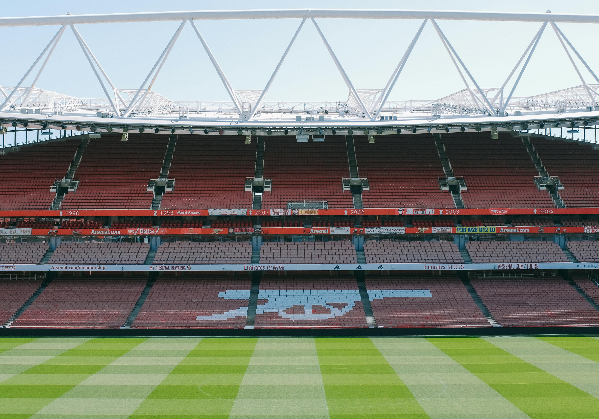

Arsenal Football Club
Arsenal Football Club are an English Premier League, the major league of English football.
Arsenal plays at Emirates Stadium in North London which was constructed in 2007.
Arsenal have won the most Football Association titles of all Premier League teams, 14, and are one of the most prestigious football clubs in the world.
Arsenal is historically one of the best clubs in the world. The outside of the stadium features many Arsenal Legends. Thierry Henry is one of them featured. He is the all-time leading goalscorer in the club's history with 228 goals.
Arsenal is a club which is celebrated in many countries around the world. There are hundreds of localized official Arsenal groups which are recognized by the club. The Fresno Gooners is the local group, part of the main Arsenal America affiliate.